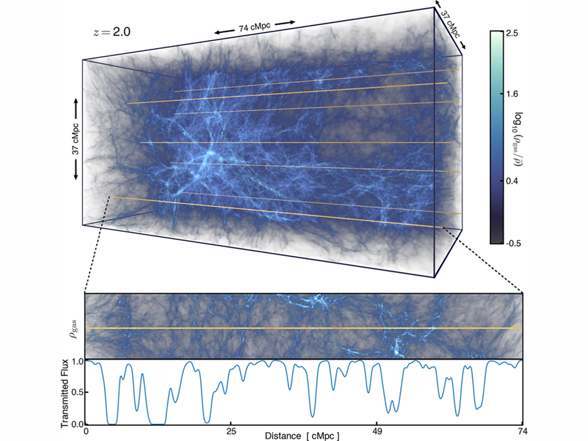
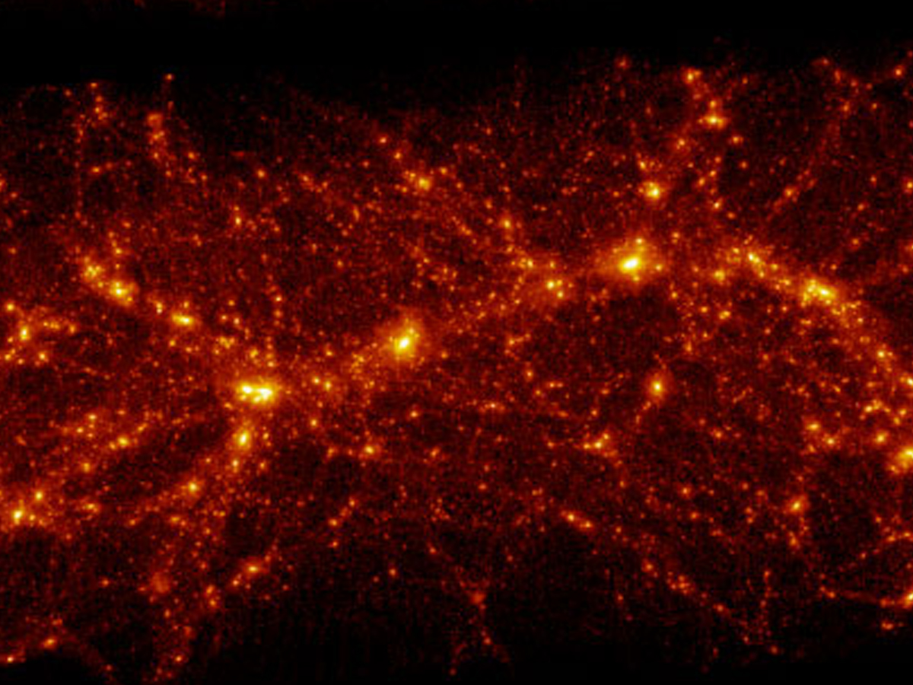

Research
Connecting galaxies, gas, and the cosmic web in an evolving cosmic ecosystem.
ISM
The interstellar medium (ISM) is the immediate reservoir from which stars form and into which stellar feedback returns matter, metals, and energy.
My research explores the physical processes that regulate star formation and quenching in galaxies, including metal enrichment and stellar feedback. I am also interested in how the physical conditions of the ISM evolve over cosmic time and how gas reservoirs within galaxies are connected to the broader baryon cycle.
(Image Credit: NASA/ESA/CSA/STScI/J. DePasquale, A. Pagan, A. M. Koekemoer)

CGM
The circumgalactic medium (CGM) forms the interface between galaxies and the wider Universe, recording both the accretion of fresh material and the redistribution of gas, metals, and energy by outflows.
Understanding how star formation and stellar feedback within galaxies, together with their surrounding large-scale environments, shape the physical properties of the CGM is a central focus of my research. Another key question is how these processes evolve over cosmic time and how metals are transported and distributed beyond galaxies. Through multiwavelength observations, I seek to reveal how the CGM mediates the exchange of matter, metals, and energy between galaxies and their surroundings.
(Image Credit: NASA/ESA/Hubble Heritage Team)

IGM
The intergalactic medium (IGM) is a major reservoir of baryons in the Universe, filling the space between galaxies and tracing the large-scale structure of the cosmic web. It also preserves information about the distribution, ionization state, and metal enrichment of baryons on large scales, as well as their thermal history over cosmic time.
My work investigates the influence of the IGM on galaxy evolution and the evolution of its physical properties throughout cosmic history. The IGM also serves as a powerful probe of the physical processes governing cosmic reionization. Another important question is how metals produced in galaxies are transported into and distributed throughout the IGM. I address these questions through both observations and simulations.
(Image Credit: Bruno Villasenor et al., 2022, ApJ, 933, 59)

LSS
The large-scale structure (LSS) of the Universe is characterized by the distribution of matter in a vast network of filaments, nodes, and voids, known as the cosmic web. This structure provides the environmental framework within which galaxies form and evolve.
My work examines how environments shape galaxy evolution across scales, from individual dark matter halos to the cosmic web, and how different evolutionary pathways depend on the surrounding matter and gas distributions. By reconstructing galaxy and matter density fields through wide-field surveys and comparing them with star formation activity, gas properties, and intergalactic absorption, I aim to identify the physical connections between galaxy evolution and the underlying large-scale structure.
(Image Credit: Metin Ata et al., 2022, Nature Astronomy, 6, 857)
